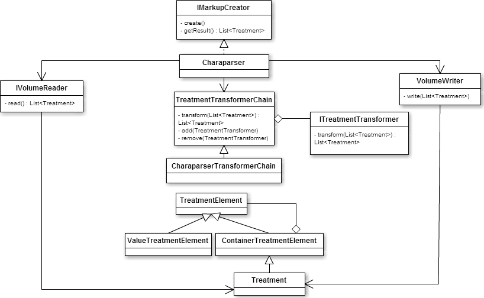

Welcome to GitHub Pages.
Charaparser is a nlp tool which processes morphological descriptions of the biodiversity domain. The output of Charaparser is a structured description of structures, their characters and relations between structures in XML format.
Project Page
More information is available on the project page.
Charaparser Class Diagrams
The following class diagrams given an overview on charaparsers architecture



JavaDoc
The javadoc can be found here.